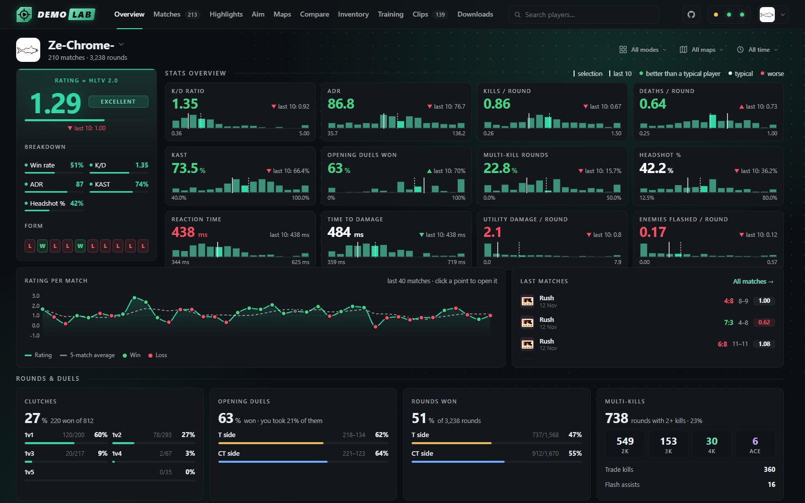
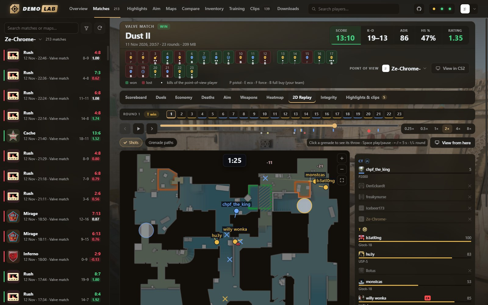
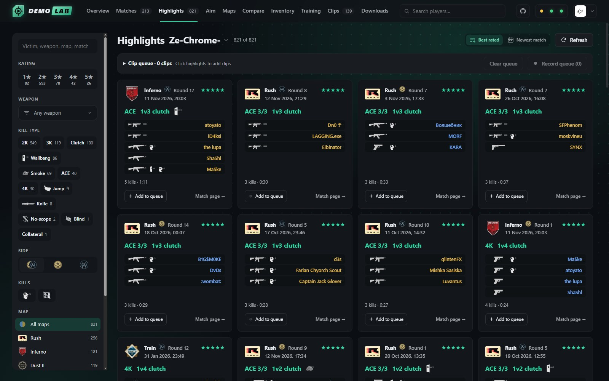
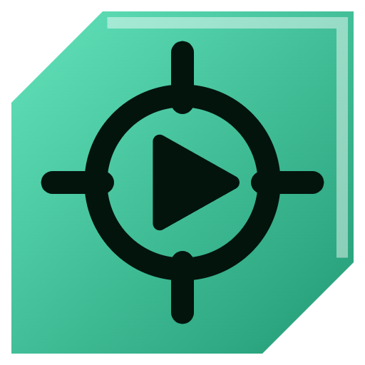

▼ 40 m Safe Shallows
▼ 300 m Grand Reef



Databank entry · Leviathan class

CS2 DemoLabStats, 2D replays, training, lineups and highlight clips from your CS2 demos. It reads each demo once, builds a dashboard, heatmaps and per-match breakdowns, spots your best moments and records them as clips while you keep using your PC. Analysis runs locally, no subscription.
▼ 900 m Lost River
Unscanned wrecks6 projectsClick to scan
Filink
Fast file, folder and text transfer between an Android phone and a Windows PC on the same Wi-Fi.
Rust · KotlinEZDownload
Save a link, keep the video. Local video downloader for Windows and Android, with a browser extension.
JavaCameraBridge
Use your Android phone as a Windows webcam over Wi-Fi. Pair with a QR code, pick it in Discord or Zoom.
Rust · AndroidCool'n RGB
Lightweight SignalRGB / iCUE replacement: RGB lighting and fan/pump control in ~6 MB of RAM.
RustEverything Backport
Every Minecraft update after 1.21.7, playable on 1.21.7. Fabric mod for client and server.
Java · FabricPhasmophobia Cheat Sheet
Question-based ghost identification with weighted scoring, built for low and no-evidence runs.
JavaScript · Web